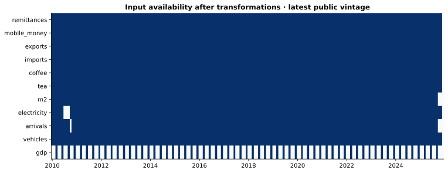
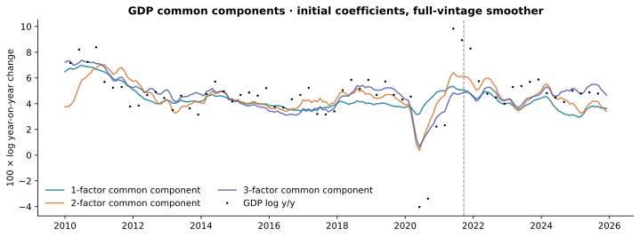
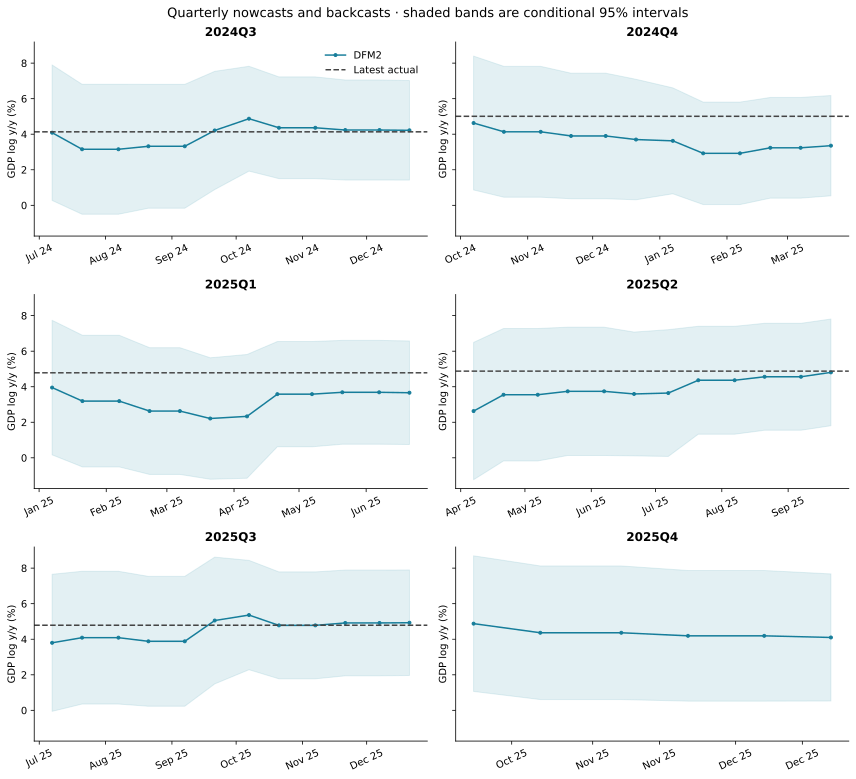
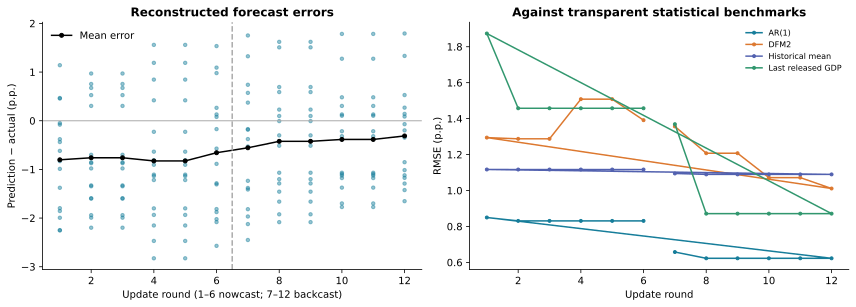
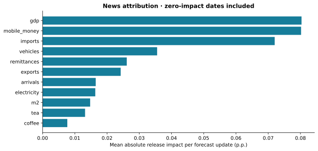
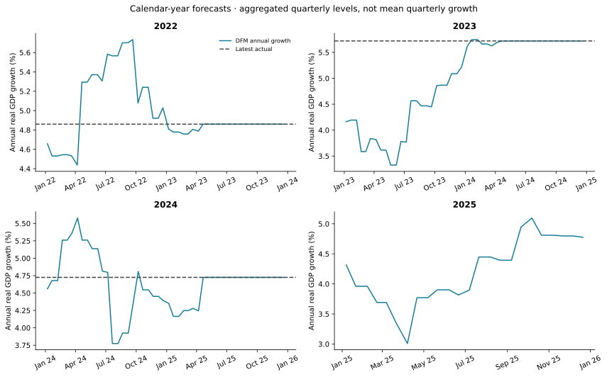
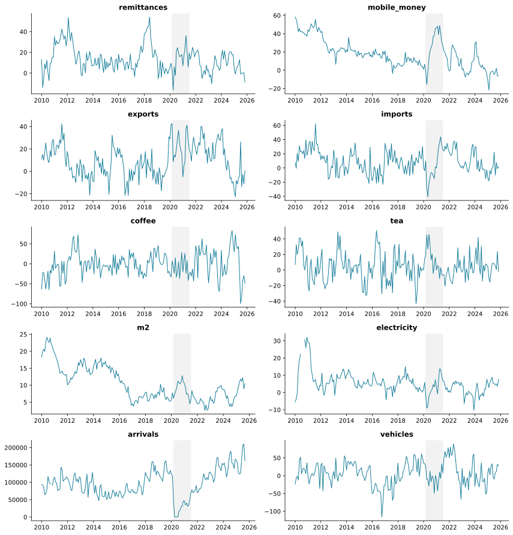

Nowcasting GDP Growth for Kenya
Reconstruction of Danov, Giannone, Kabundi, Okou & Spilimbergo · IMF Working Paper 26/32 (2026)
Original paper (68 pages) · Run instructions & methodological notes · Generated 2026-11-22
How to interpret these results
This is an executed reconstruction using real public observations. No unavailable indicator has been replaced with synthetic data, annual GDP has not been interpolated into quarters, and the paper’s reported numerical results are not used to fit the model. Differences in data, revisions and measurement mean that this is a test of a reconstructed method, not confirmation of the paper’s exact figures.
- Year-on-year transformations: 100 log differences, with quarterly GDP on quarter-end months. PMI and visitor arrivals remain in levels. Nonpositive levels are treated as missing.
- One, two and three joint VAR(1) factors, individual AR(1) components, EM estimation, and Kalman filtering/smoothing. GDP uses the paper’s [1,1,1] aggregation; the standard quarter-on-quarter [1,2,3,2,1] rule is not substituted.
- Only lag-eligible observations enter each vintage. Parameters and standardization are fitted initially and at quarter starts using up to twelve years, then frozen within that quarter.
- All forecast dates are pseudo-real-time, including April 2024 onward. Historical revisions and the Haver release calendar are unavailable. Fixed Table 1 end-of-period day lags replace exact release dates.
- Conditional intervals exclude parameter uncertainty, vintage revisions and structural breaks. Full-vintage smoothed components are descriptive and never used as forecast inputs.
- The evaluation contains 16 quarters over 2021Q4–2025Q3. The paper calls this span “15 quarters,” but the inclusive calendar span is 16; actual counts are reported rather than silently dropping a quarter.
- CBK and WEO forecast-vintage comparisons are not reconstructed without their original dated forecast series. Statistical baselines are clearly labeled alternatives.
Principal finding
The reconstructed DFM2 nowcast RMSE is 1.383 p.p., versus 0.834 for AR(1); its backcast RMSE is 1.160, versus 0.629 for AR(1). Lower RMSE is better. These public-data results do not reproduce the paper’s favorable comparative performance; they do not establish that the published results are incorrect because the source data and vintages differ.
The requested factor counts were retained as planned; none was selected after seeing the evaluation errors. The saved CSV includes each model’s results.
Forecast accuracy · reconstructed DFM2
Percentage points of 100 × log year-on-year GDP growth. Every model is evaluated on the same dated targets. Errors use the acquired latest GDP vintage, not first releases. Nowcasts and backcasts each combine six update rounds per completed target quarter.
| type | model | n | quarters | rmse | mae | bias |
|---|---|---|---|---|---|---|
| backcast | DFM2 | 96 | 16 | 1.160 | 0.967 | -0.414 |
| backcast | Last released GDP | 96 | 16 | 0.972 | 0.672 | 0.287 |
| backcast | Historical mean | 96 | 16 | 1.090 | 0.669 | -0.446 |
| backcast | AR(1) | 96 | 16 | 0.629 | 0.527 | -0.058 |
| nowcast | DFM2 | 96 | 16 | 1.383 | 1.202 | -0.772 |
| nowcast | Last released GDP | 96 | 16 | 1.535 | 1.164 | 0.596 |
| nowcast | Historical mean | 96 | 16 | 1.117 | 0.683 | -0.460 |
| nowcast | AR(1) | 96 | 16 | 0.834 | 0.691 | -0.147 |
Do not interpret deviations from the authors’ estimates as implementation error alone, or favorable benchmark results as an exact replication.
Factor-count robustness
Lowest reconstructed RMSE among the requested DFM variants: backcast: DFM1; nowcast: DFM1. This is a reported sensitivity result, not an ex-post change to the main specification.
| model | type | n | quarters | rmse | mae | bias |
|---|---|---|---|---|---|---|
| DFM1 | backcast | 96 | 16 | 0.863 | 0.666 | -0.331 |
| DFM1 | nowcast | 96 | 16 | 1.020 | 0.806 | -0.460 |
| DFM2 | backcast | 96 | 16 | 1.160 | 0.967 | -0.414 |
| DFM2 | nowcast | 96 | 16 | 1.383 | 1.202 | -0.772 |
| DFM3 | backcast | 96 | 16 | 1.110 | 0.942 | -0.363 |
| DFM3 | nowcast | 96 | 16 | 1.453 | 1.165 | -0.842 |
1. Data coverage

2. Common GDP components

3. Quarterly predictions

4. Forecast evaluation

5. News attribution

6. Calendar-year growth

7. Monthly inputs

Published point estimates versus this reconstruction
Selected dated values explicitly described in Section 4.2 (PDF page 30). Differences are disclosed, not minimized by calibration. The paper’s percentage-growth descriptions and the implemented log-growth definition are not necessarily numerically identical.
| asof | target | paper_prediction | reconstructed_prediction | difference_pp | paper_reference | interpretation |
|---|---|---|---|---|---|---|
| 2024-01-07 | 2024Q1 | 5.060 | 4.740 | -0.320 | Section 4.2, printed page 28 (PDF page 30) | Illustrative comparison, not a numerical pass/fail: source vintages and definitions differ. |
| 2024-03-21 | 2024Q1 | 6.400 | 6.354 | -0.046 | Section 4.2, printed page 28 (PDF page 30) | Illustrative comparison, not a numerical pass/fail: source vintages and definitions differ. |
| 2024-04-07 | 2024Q2 | 5.780 | 5.616 | -0.164 | Section 4.2, printed page 28 (PDF page 30) | Illustrative comparison, not a numerical pass/fail: source vintages and definitions differ. |
| 2024-06-21 | 2024Q2 | 4.830 | 4.303 | -0.527 | Section 4.2, printed page 28 (PDF page 30) | Illustrative comparison, not a numerical pass/fail: source vintages and definitions differ. |
| 2025-01-07 | 2025Q1 | 4.160 | 3.953 | -0.207 | Section 4.2, printed page 28 (PDF page 30) | Illustrative comparison, not a numerical pass/fail: source vintages and definitions differ. |
| 2025-03-21 | 2025Q1 | 3.120 | 2.212 | -0.908 | Section 4.2, printed page 28 (PDF page 30) | Illustrative comparison, not a numerical pass/fail: source vintages and definitions differ. |
Input coverage
Arrivals use a JKIA+MIA airport-only proxy. Three July–September 2009 electricity observations are excluded because of inconsistent source date labels, and October 2010 airport arrivals are missing. No values are interpolated. The three electricity gaps also remove their 2010 year-on-year comparisons. Source-quality record.
| series | status | reason | raw_start | raw_end | n_raw | nonpositive_levels | n_transformed | first_transformed | last_transformed |
|---|---|---|---|---|---|---|---|---|---|
| pmi | omitted | No usable public history acquired | — | — | — | — | — | — | — |
| remittances | included | — | 2009-01 | 2025-11 | 203.000 | 0.000 | 191.000 | 2010-01 | 2025-11 |
| mobile_money | included | — | 2009-01 | 2025-11 | 203.000 | 0.000 | 191.000 | 2010-01 | 2025-11 |
| exports | included | — | 2009-01 | 2025-11 | 203.000 | 0.000 | 191.000 | 2010-01 | 2025-11 |
| imports | included | — | 2009-01 | 2025-11 | 203.000 | 0.000 | 191.000 | 2010-01 | 2025-11 |
| coffee | included | — | 2009-01 | 2025-11 | 203.000 | 0.000 | 191.000 | 2010-01 | 2025-11 |
| tea | included | — | 2009-01 | 2025-11 | 203.000 | 0.000 | 191.000 | 2010-01 | 2025-11 |
| m2 | included | — | 2009-01 | 2025-09 | 201.000 | 0.000 | 189.000 | 2010-01 | 2025-09 |
| electricity | included | — | 2009-01 | 2025-11 | 200.000 | 0.000 | 188.000 | 2010-01 | 2025-11 |
| arrivals | included | — | 2009-01 | 2025-09 | 200.000 | 0.000 | 188.000 | 2010-01 | 2025-09 |
| vehicles | included | — | 2009-01 | 2025-11 | 203.000 | 0.000 | 191.000 | 2010-01 | 2025-11 |
| gdp | included | — | 2009Q1 | 2025Q3 | 67.000 | 0.000 | 63.000 | 2010-03 | 2025-09 |
Estimation & reconciliation
Saved validation: 7 behavior tests passed, plus empirical timing, checksum, news and report-asset checks. Validation details · Test log.
54 of 54 quarterly EM fits reached the configured tolerance. Nonconverged fits, if any, remain flagged and are not represented as converged. Maximum absolute discrepancy between release-news contributions and the fixed-parameter prediction change: 1.44e-15 p.p.
Quarterly fit diagnostics
| factors | fit_asof | iterations | loglikelihood | converged |
|---|---|---|---|---|
| 1 | 2021-09-21 | 37 | -1,276.044 | True |
| 1 | 2021-10-01 | 38 | -1,276.024 | True |
| 1 | 2022-01-01 | 41 | -1,307.897 | True |
| 1 | 2022-04-01 | 39 | -1,300.451 | True |
| 1 | 2022-07-01 | 39 | -1,308.327 | True |
| 1 | 2022-10-01 | 39 | -1,301.634 | True |
| 1 | 2023-01-01 | 38 | -1,320.140 | True |
| 1 | 2023-04-01 | 39 | -1,364.230 | True |
| 1 | 2023-07-01 | 38 | -1,371.296 | True |
| 1 | 2023-10-01 | 37 | -1,415.308 | True |
| 1 | 2024-01-01 | 36 | -1,426.296 | True |
| 1 | 2024-04-01 | 38 | -1,424.789 | True |
| 1 | 2024-07-01 | 38 | -1,436.864 | True |
| 1 | 2024-10-01 | 38 | -1,442.539 | True |
| 1 | 2025-01-01 | 37 | -1,434.515 | True |
| 1 | 2025-04-01 | 36 | -1,406.941 | True |
| 1 | 2025-07-01 | 36 | -1,400.425 | True |
| 1 | 2025-10-01 | 37 | -1,400.758 | True |
| 2 | 2021-09-21 | 63 | -1,242.060 | True |
| 2 | 2021-10-01 | 63 | -1,241.915 | True |
| 2 | 2022-01-01 | 58 | -1,270.137 | True |
| 2 | 2022-04-01 | 53 | -1,257.012 | True |
| 2 | 2022-07-01 | 49 | -1,266.994 | True |
| 2 | 2022-10-01 | 59 | -1,267.185 | True |
| 2 | 2023-01-01 | 64 | -1,288.111 | True |
| 2 | 2023-04-01 | 62 | -1,336.014 | True |
| 2 | 2023-07-01 | 62 | -1,342.975 | True |
| 2 | 2023-10-01 | 49 | -1,363.447 | True |
| 2 | 2024-01-01 | 50 | -1,366.247 | True |
| 2 | 2024-04-01 | 47 | -1,368.578 | True |
| 2 | 2024-07-01 | 55 | -1,376.423 | True |
| 2 | 2024-10-01 | 46 | -1,385.245 | True |
| 2 | 2025-01-01 | 46 | -1,383.108 | True |
| 2 | 2025-04-01 | 46 | -1,367.506 | True |
| 2 | 2025-07-01 | 43 | -1,365.491 | True |
| 2 | 2025-10-01 | 43 | -1,364.754 | True |
| 3 | 2021-09-21 | 101 | -1,224.337 | True |
| 3 | 2021-10-01 | 82 | -1,225.195 | True |
| 3 | 2022-01-01 | 86 | -1,251.682 | True |
| 3 | 2022-04-01 | 76 | -1,238.597 | True |
| 3 | 2022-07-01 | 136 | -1,255.369 | True |
| 3 | 2022-10-01 | 104 | -1,257.795 | True |
| 3 | 2023-01-01 | 75 | -1,275.785 | True |
| 3 | 2023-04-01 | 60 | -1,323.563 | True |
| 3 | 2023-07-01 | 57 | -1,331.658 | True |
| 3 | 2023-10-01 | 55 | -1,352.937 | True |
| 3 | 2024-01-01 | 59 | -1,356.340 | True |
| 3 | 2024-04-01 | 57 | -1,357.785 | True |
| 3 | 2024-07-01 | 88 | -1,366.227 | True |
| 3 | 2024-10-01 | 54 | -1,371.667 | True |
| 3 | 2025-01-01 | 55 | -1,362.939 | True |
| 3 | 2025-04-01 | 59 | -1,338.930 | True |
| 3 | 2025-07-01 | 56 | -1,336.119 | True |
| 3 | 2025-10-01 | 73 | -1,336.794 | True |
Downloads & provenance
- Every quarterly forecast and decomposition
- Every calendar-year forecast
- Release-level surprises, weights and impacts
- Summary accuracy measures · Metrics by update round
- Table 1 descriptive comparisons
- Data coverage · Transformed panel · Normalized raw observations
- Source metadata and acquisition dates · File checksums
- Estimation diagnostics · Run configuration · Software versions
Source metadata
{
"sources": [
{
"url": "https://www.centralbank.go.ke/foreign-trade-summary/",
"method": "GET",
"post_data": null,
"retrieved_utc": "2026-11-22T22:55:35.635726+00:00",
"sha256": "b2c724427c749558789409ff86500686a6ea58b94d6acd4ff3f7608e83c370dc",
"bytes": 195560,
"local_file": "foreign_trade.html"
},
{
"url": "https://www.knbs.or.ke/wp-content/uploads/2025/12/Kenya-Quarterly-Gross-Domestic-Product-Third-Quarter-2025.pdf",
"method": "GET",
"post_data": null,
"retrieved_utc": "2026-11-22T22:55:42.692499+00:00",
"sha256": "2e0e9e6f6a0bf387f03b741d109d6109965ea114690179d17603b6a37090a891",
"bytes": 2763459,
"local_file": "gdp_2025q3.pdf"
},
{
"url": "https://www.knbs.or.ke/wp-content/uploads/2021/09/Revision-and-Rebasing-of-National-Accounts-Report.pdf",
"method": "GET",
"post_data": null,
"retrieved_utc": "2026-11-22T22:55:40.032189+00:00",
"sha256": "734d1b25277abc8728570887d9dfd35e050643d7f1064f9063f1310a92ed6c2b",
"bytes": 696872,
"local_file": "gdp_rebased_2021.pdf"
},
{
"url": "https://www.knbs.or.ke/wp-content/uploads/2023/08/Kenya-Leading-Economic-Indicators-December-2009.pdf",
"method": "GET",
"post_data": null,
"retrieved_utc": "2026-11-22T22:55:51.729514+00:00",
"sha256": "913df10ca27d5f0b8813d443c6bac03225b6230895a3ddd920492337d331a05a",
"bytes": 458413,
"local_file": "lei_2009.pdf"
},
{
"url": "https://www.knbs.or.ke/wp-content/uploads/2023/08/Kenya-Leading-Economic-Indicators-December-2010.pdf",
"method": "GET",
"post_data": null,
"retrieved_utc": "2026-11-22T22:55:52.876900+00:00",
"sha256": "a22929f082e9ace601e726d41f64b50d7d5855a62ac209fd343b548c18f78ac5",
"bytes": 1037381,
"local_file": "lei_2010.pdf"
},
{
"url": "https://www.knbs.or.ke/wp-content/uploads/2023/08/Kenya-Leading-Economic-Indicators-December-2011.pdf",
"method": "GET",
"post_data": null,
"retrieved_utc": "2026-11-22T22:55:54.013275+00:00",
"sha256": "6c4683ff7117fe3207e10b9f2ea2076b8f3a9abb9d2eeede9702a91028ffed1e",
"bytes": 951929,
"local_file": "lei_2011.pdf"
},
{
"url": "https://www.knbs.or.ke/wp-content/uploads/2023/08/Kenya-Leading-Economic-Indicators-December-2012.pdf",
"method": "GET",
"post_data": null,
"retrieved_utc": "2026-11-22T22:55:55.000179+00:00",
"sha256": "ddfe94dda87efb1be65b92646634dfbe6b9d18052f0a145f92f6ccfd5f03b575",
"bytes": 1045820,
"local_file": "lei_2012.pdf"
},
{
"url": "https://www.knbs.or.ke/wp-content/uploads/2023/08/Kenya-Leading-Economic-Indicators-December-2013.pdf",
"method": "GET",
"post_data": null,
"retrieved_utc": "2026-11-22T22:55:56.038726+00:00",
"sha256": "5fd71bcfe2b8ad2413ec065bca2f393db20260f81ec0561e53cb2063e2c6bd08",
"bytes": 904722,
"local_file": "lei_2013.pdf"
},
{
"url": "https://www.knbs.or.ke/wp-content/uploads/2023/08/Kenya-Leading-Economic-Indicators-December-2014.pdf",
"method": "GET",
"post_data": null,
"retrieved_utc": "2026-11-22T22:55:56.935030+00:00",
"sha256": "2995520c024153041f40e79e5237aef32c3ce41a22f0cb32142cfdd4d7f5f3da",
"bytes": 798007,
"local_file": "lei_2014.pdf"
},
{
"url": "https://www.knbs.or.ke/wp-content/uploads/2023/08/Kenya-Leading-Economic-Indicators-December-2015.pdf",
"method": "GET",
"post_data": null,
"retrieved_utc": "2026-11-22T22:55:57.938332+00:00",
"sha256": "27e074bc2f30bcc4550edfac2a42a996762da5f4cb220d5a30b1207154932730",
"bytes": 874487,
"local_file": "lei_2015.pdf"
},
{
"url": "https://www.knbs.or.ke/wp-content/uploads/2023/08/Kenya-Leading-Economic-Indicators-December-2016.pdf",
"method": "GET",
"post_data": null,
"retrieved_utc": "2026-11-22T22:55:58.974458+00:00",
"sha256": "ce42f9cfed5092961e057bf200c86910e831469a889789bf543912d8893ed2f1",
"bytes": 706655,
"local_file": "lei_2016.pdf"
},
{
"url": "https://www.knbs.or.ke/wp-content/uploads/2023/08/Kenya-Leading-Economic-Indicators-December-2017.pdf",
"method": "GET",
"post_data": null,
"retrieved_utc": "2026-11-22T22:56:00.013151+00:00",
"sha256": "9f8f3ea52d8d46e8916f271bd681beb66eb25fe1c68f777c0a378b5b87f6b199",
"bytes": 1166503,
"local_file": "lei_2017.pdf"
},
{
"url": "https://www.knbs.or.ke/wp-content/uploads/2023/07/Kenya-Leading-Economic-Indicators-December-2018.pdf",
"method": "GET",
"post_data": null,
"retrieved_utc": "2026-11-22T22:56:01.034724+00:00",
"sha256": "e0a773af3bced4355e2f30a8616ab728c4b9329fe3cc58d7c4a95549906f4091",
"bytes": 1202844,
"local_file": "lei_2018.pdf"
},
{
"url": "https://www.knbs.or.ke/wp-content/uploads/2023/07/Kenya-Leading-Economic-Indicators-December-2019.pdf",
"method": "GET",
"post_data": null,
"retrieved_utc": "2026-11-22T22:56:02.124624+00:00",
"sha256": "adfb734bc5e6813c89aa1d75431a7bc032162a8126d0f68105f74f30cb91ec72",
"bytes": 797997,
"local_file": "lei_2019.pdf"
},
{
"url": "https://www.knbs.or.ke/wp-content/uploads/2023/07/Kenya-Leading-Economic-Indicators-December-2020.pdf",
"method": "GET",
"post_data": null,
"retrieved_utc": "2026-11-22T22:56:03.261029+00:00",
"sha256": "1c553a21d925b13930b39939706fce3ef06e31a145f582d8ade1414e12021a57",
"bytes": 912240,
"local_file": "lei_2020.pdf"
},
{
"url": "https://www.knbs.or.ke/wp-content/uploads/2023/07/Kenya-Leading-Economic-Indicators-December-2021.pdf",
"method": "GET",
"post_data": null,
"retrieved_utc": "2026-11-22T22:56:04.618623+00:00",
"sha256": "44aeb5e12b5810b1c75670222dc01504cd1b9deab67f63f6d26d02239680863d",
"bytes": 936701,
"local_file": "lei_2021.pdf"
},
{
"url": "https://www.knbs.or.ke/wp-content/uploads/2023/07/Kenya-Leading-Economic-Indicators-December-2022.pdf",
"method": "GET",
"post_data": null,
"retrieved_utc": "2026-11-22T22:56:05.595359+00:00",
"sha256": "91263cb99e5468d2f37d095ecdd53ebe5e991d6178e9d9b53c478fff68be829f",
"bytes": 929758,
"local_file": "lei_2022.pdf"
},
{
"url": "https://www.knbs.or.ke/wp-content/uploads/2024/03/Kenya-Leading-Economic-Indicators-December-2023.pdf",
"method": "GET",
"post_data": null,
"retrieved_utc": "2026-11-22T22:55:50.996158+00:00",
"sha256": "1731bf158e73b2776aa8e3199f02adf955a2c80e2c36aa60b488435b85a2dd90",
"bytes": 890881,
"local_file": "lei_2023.pdf"
},
{
"url": "https://www.knbs.or.ke/wp-content/uploads/2025/02/Kenya-Leading-Economic-Indicators-December-2024.pdf.pdf",
"method": "GET",
"post_data": null,
"retrieved_utc": "2026-11-22T22:55:49.417395+00:00",
"sha256": "f62e7a393539825caa6d968c4762aeb51165fdb3aa2a9e164b79ec70381a76eb",
"bytes": 1382612,
"local_file": "lei_2024.pdf"
},
{
"url": "https://www.knbs.or.ke/wp-content/uploads/2026/02/Kenya-Leading-Economic-Indicators-December-2025.pdf",
"method": "GET",
"post_data": null,
"retrieved_utc": "2026-11-22T22:55:47.054304+00:00",
"sha256": "f91b29bb887a23091dffd9d77543d02d050448da1021a64e4302383d84714dc7",
"bytes": 1870585,
"local_file": "lei_2025.pdf"
},
{
"url": "https://www.knbs.or.ke/wp-json/wp/v2/media?search=Leading%20Economic%20Indicators%20December&per_page=100",
"method": "GET",
"post_data": null,
"retrieved_utc": "2026-11-22T22:55:43.513322+00:00",
"sha256": "5bb30521bc7ff11f8f5d1b2727f1cd387db57708db18b849fc2a56bf17bcdbf2",
"bytes": 85762,
"local_file": "lei_archive.json"
},
{
"url": "https://www.centralbank.go.ke/uploads/monetary_and_finance_statistics/377062609_Depository%20Corporation%20Survey%20-%20CSV.csv",
"method": "GET",
"post_data": null,
"retrieved_utc": "2026-11-22T22:55:36.560888+00:00",
"sha256": "28573f906e7052d00d77e84dbb6f31aa9ccaaa7918021062d61c7ceb478df27c",
"bytes": 101791,
"local_file": "m2.csv"
},
{
"url": "https://www.centralbank.go.ke/national-payments-system/mobile-payments/",
"method": "GET",
"post_data": null,
"retrieved_utc": "2026-11-22T22:55:35.436339+00:00",
"sha256": "b0c0fe0aa536e959b85393de438c0ad78670ec903ac54078ab7f7e683cec5cbd",
"bytes": 125433,
"local_file": "mobile_payments.html"
},
{
"url": "https://www.centralbank.go.ke/wp-admin/admin-ajax.php?action=get_wdtable&table_id=27",
"method": "POST (read-only table query)",
"post_data": {
"draw": 1,
"start": 0,
"length": -1
},
"retrieved_utc": "2026-11-22T22:55:44.846856+00:00",
"sha256": "a9d8eeee4ce372dbe5622b6f9c88d39059991117f05f4d1104b55c9b914e5cd4",
"bytes": 38855,
"local_file": "principal_exports.json"
},
{
"url": "https://www.centralbank.go.ke/diaspora-remittances/",
"method": "GET",
"post_data": null,
"retrieved_utc": "2026-11-22T22:55:35.207992+00:00",
"sha256": "0f71dfe48d2af9ec8792d98534689342c0f6a7e59085cd976a252da45c1f1ad0",
"bytes": 139154,
"local_file": "remittances.html"
}
],
"series": {
"pmi": {
"name": "Stanbic Bank Kenya PMI",
"frequency": "M",
"lag": 5,
"transform": "level",
"end": "2025-12",
"unit": "Index"
},
"remittances": {
"name": "Diaspora remittances",
"frequency": "M",
"lag": 11,
"transform": "log12",
"end": "2025-11",
"unit": "Million USD"
},
"mobile_money": {
"name": "Total agent cash in cash out",
"frequency": "M",
"lag": 17,
"transform": "log12",
"end": "2025-11",
"unit": "Billion KES"
},
"exports": {
"name": "Exports of goods",
"frequency": "M",
"lag": 41,
"transform": "log12",
"end": "2025-11",
"unit": "Million KES"
},
"imports": {
"name": "Imports of goods",
"frequency": "M",
"lag": 41,
"transform": "log12",
"end": "2025-11",
"unit": "Million KES"
},
"coffee": {
"name": "Coffee exports",
"frequency": "M",
"lag": 41,
"transform": "log12",
"end": "2025-11",
"unit": "Tonnes"
},
"tea": {
"name": "Tea exports",
"frequency": "M",
"lag": 41,
"transform": "log12",
"end": "2025-11",
"unit": "Tonnes"
},
"m2": {
"name": "Money supply M2",
"frequency": "M",
"lag": 45,
"transform": "log12",
"end": "2025-09",
"unit": "Million KES"
},
"electricity": {
"name": "Electricity production",
"frequency": "M",
"lag": 48,
"transform": "log12",
"end": "2025-11",
"unit": "Million kWh"
},
"arrivals": {
"name": "Visitor arrivals",
"frequency": "M",
"lag": 48,
"transform": "level",
"end": "2025-09",
"unit": "Persons"
},
"vehicles": {
"name": "Vehicle production",
"frequency": "M",
"lag": 48,
"transform": "log12",
"end": "2025-11",
"unit": "Units"
},
"gdp": {
"name": "Real GDP",
"frequency": "Q",
"lag": 99,
"transform": "log4",
"end": "2025Q3",
"unit": "Million KES, constant prices"
}
},
"departures": [
"PMI omitted: no complete free official historical series verified; S&P historical data are subscription-based.",
"GDP splices the September 2021 rebasing report for 2009–2019 with December 2025 quarterly release for 2020–2025Q3. Both use constant 2016 prices, but this is mixed vintage.",
"Visitor arrivals use a consistent JKIA+MIA airport proxy, excluding other borders even when those are available.",
"Electricity uses domestic/local generation, excluding imports; the paper does not identify the precise column.",
"Monthly KNBS PDF data use the newest December edition containing each month; original revision vintages are unavailable.",
"March/April 2012 CBK trade gaps are repaired from KNBS December 2012 LEI, Table 12, PDF page 25.",
"All inputs are truncated to Table 1 endpoints; historical public files are saved unmodified.",
"Electricity July–September 2009 is left missing: the December 2009 table labels these rows as 2010. No date correction or interpolation is inferred.",
"Airport arrivals for October 2010 are absent from the acquired December editions and remain missing."
],
"normalized_coverage": [
{
"series": "arrivals",
"first": "2009-01",
"last": "2025-09",
"n": 200
},
{
"series": "coffee",
"first": "2009-01",
"last": "2025-11",
"n": 203
},
{
"series": "electricity",
"first": "2009-01",
"last": "2025-11",
"n": 200
},
{
"series": "exports",
"first": "2009-01",
"last": "2025-11",
"n": 203
},
{
"series": "gdp",
"first": "2009Q1",
"last": "2025Q3",
"n": 67
},
{
"series": "imports",
"first": "2009-01",
"last": "2025-11",
"n": 203
},
{
"series": "m2",
"first": "2009-01",
"last": "2025-09",
"n": 201
},
{
"series": "mobile_money",
"first": "2009-01",
"last": "2025-11",
"n": 203
},
{
"series": "remittances",
"first": "2009-01",
"last": "2025-11",
"n": 203
},
{
"series": "tea",
"first": "2009-01",
"last": "2025-11",
"n": 203
},
{
"series": "vehicles",
"first": "2009-01",
"last": "2025-11",
"n": 203
}
]
}